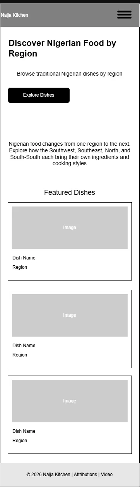
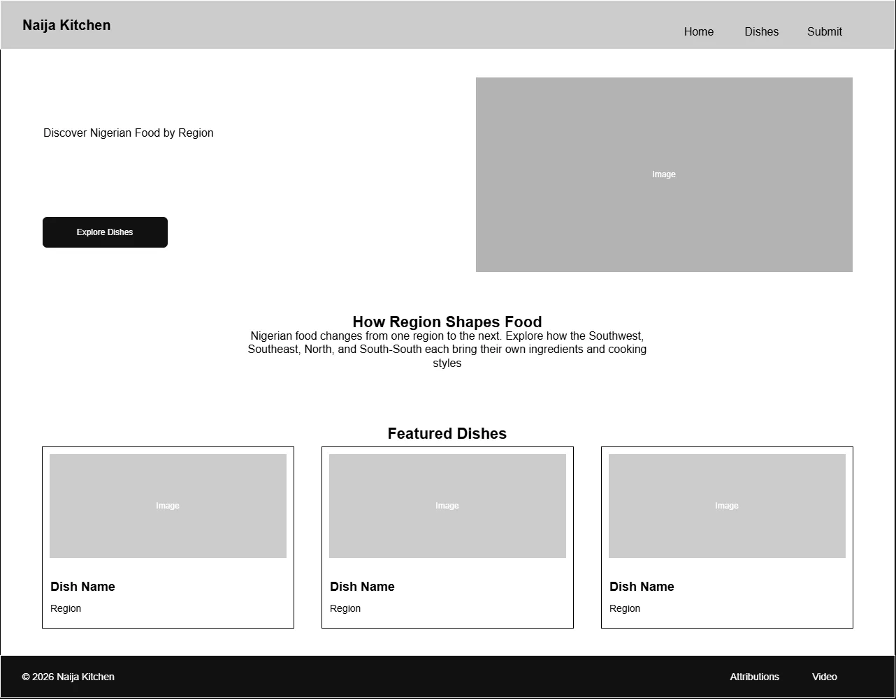

Site Name
Naija Kitchen
"Naija" is the everyday nickname for Nigeria, and "Kitchen" tells visitors the site is about cooking and food, so the name says what the site covers.
Site Purpose
Naija Kitchen is an information site that helps people explore Nigerian food by region. Visitors can browse a collection of more than 15 traditional dishes, filter them by region, read ingredients and descriptions, save their favorites, and suggest dishes through a recipe form.
Scenarios
- Which dishes come from the Yoruba, Igbo and Hausa regions of Nigeria?
- What ingredients do I need to cook egusi soup, and how long does it take?
- How can I keep a list of the dishes I want to try later?
- How do I suggest a dish that is missing from the site?
Color Scheme
A dark, warm palette feels like a cozy kitchen, with accents drawn from Nigerian spice tones.
| Swatch | Color | Used for |
|---|---|---|
| Deep brown #2b1d16 | Page background, header and footer | |
| Sand #f5ead9 | Paragraph text | |
| Gold #e0a84c | Headings and Links | |
| Terracotta #d2693c | Borders and accent details |
Typography
Two fonts from Google Fonts keep the look consistent.
Playfair Display Bold
Used for the site name and all headings.
Open Sans Regular and SemiBold
Used for paragraphs, navigation, buttons and form labels.
Wireframe
The home page layout for small and large screens. On a phone, the content stacks to one column and the menu collapses into a hamburger icon. On a larger screen, the navigation links sit in a row and the featured dishes appear side by side.

